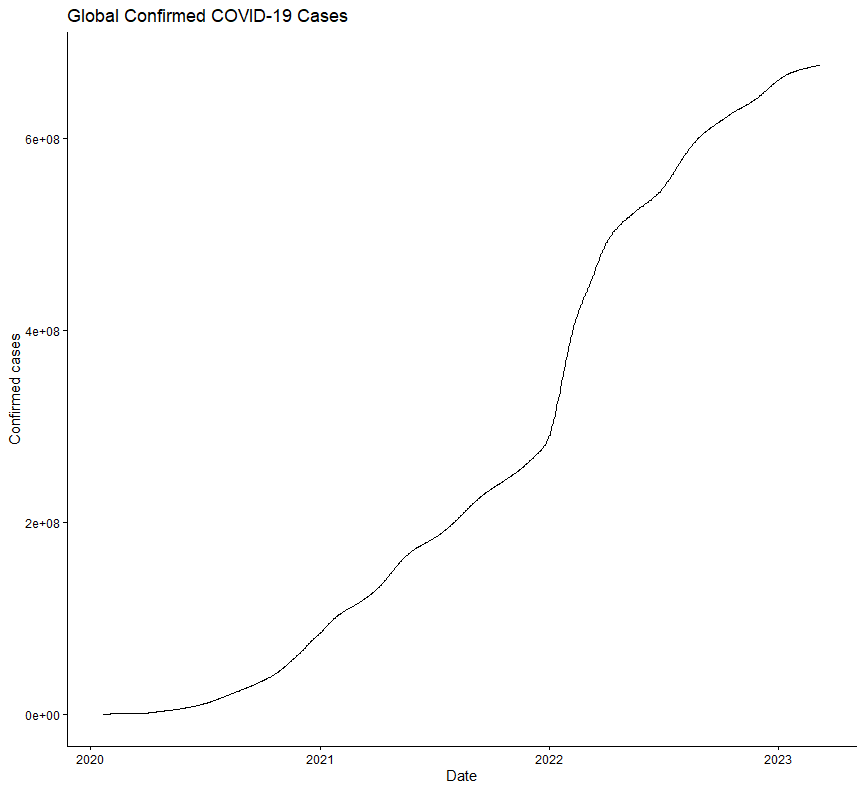
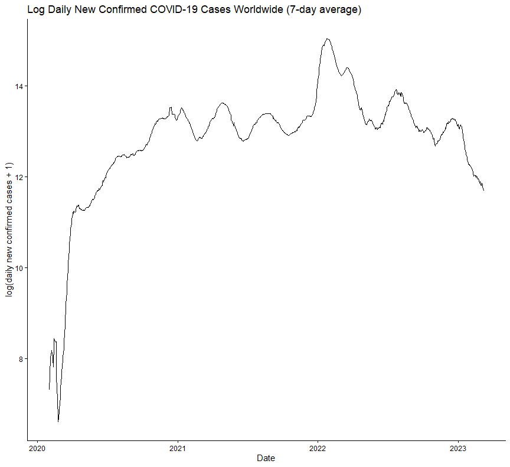
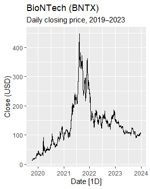
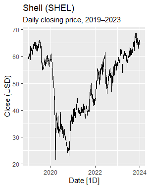
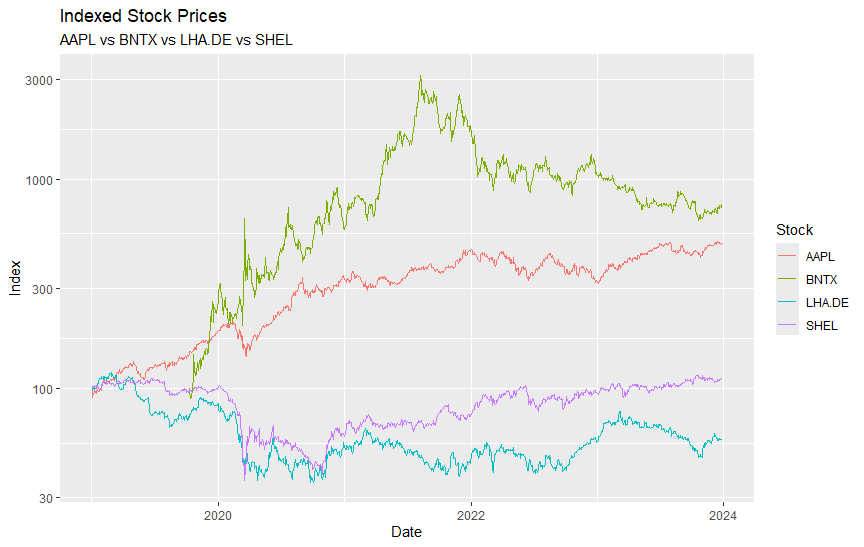

# Installing Packages
install.packages(c("quantmod", "dplyr"))
# Loading PACKAGES
library(quantmod)
library(dplyr)
# Define Ticker
tickers <- c(
"AAPL", # Apple
"BNTX", # BioNTech
"LHA.DE", # Lufthansa
"SHEL" # Shell
)
# Rawdate (Daily Prices) read in from 2019 until the end of 2023
getSymbols(
tickers,
from = "2019-01-01",
to = "2023-12-31"
)
# Converting very stock in a Dataframe
AAPL_df <- data.frame(Date = index(AAPL), coredata(AAPL))
BNTX_df <- data.frame(Date = index(BNTX), coredata(BNTX))
LHA_df <- data.frame(Date = index(LHA.DE), coredata(LHA.DE))
SHEL_df <- data.frame(Date = index(SHEL), coredata(SHEL))1 Introduction (EW, LF, MB)
“March 2020 saw one of the most dramatic stock market crashes in history” (Mazur, Dang, and Vega (2021)). The quote highlights COVID as a significant event that not only had health consequences but also immense economic consequences worldwide. A crisis, which can influence people’s psychology, as well as financial decision making, is one of a kind (Arya and Singh (2025)). To determine the extent to which the COVID-19 pandemic affected the financial market, we selected four different industries to compare, including one stock for the technology, tourism, pharmaceutical, and energy sector. For each industry, we chose a well-known company, to represent each sector. Apple is provided for the technology, Shell for energy, Lufthansa for tourism, and BioNtech for the pharmaceutical industry (Noor (2021)). Especially BioNtech is chosen, due to its invention of a vaccine influencing humanity during COVID making it interesting for later analysis. We concentrated on these four industries due to studies that found out that industries included in our project have been hit differently by the pandemic. These influences can be extremely postive but also negatively impact the different sectors (Mazur, Dang, and Vega (2021)). Therefore, it is reasonable to examine which of our chosen sectors represented by the stock have been particularly affected by the pandemic between 2019 and 2023. This period of time shows how the stock’s prices behaved before, during and after the pandemic.
To make COVID’s impact measurable, we focus on two factors. On the one hand, volatility serving as an indicator of risk and uncertainty (Rustamov (2024); Nicolay (2011)), while on the other hand, recovery dynamics to measure the pandemic’s sustainable influence on the stock’s performance and if there is a return to the stock’s pre-COVID level will be examined (Bui et al. (2024); Buijs et al. (2025)). Therefore, the goal of this paper is to answer the following question: “To what extend do technology, toursim, pharmaceutical, and energy stocks differ in terms of their price volatility and recovery dynamics during and after the COVID-19 pandemic?”
2 Theoretical Background (LF)
For developing a general understanding of our research, this chapter will first explain what financial market behavior is and how it can be represented in the period from 2019 to 2023. To ensure that our codes and their analysis at the end can be easily followed later, we will clarify what volatility is and when it will be used. We will also outline what recovery dynamics are. Since our research question spans the entire duration of the Covid-19 pandemic, we make sure to provide a detailed explanation of what the Covid-19 and the associated pandemic entail.
2.1 Definition of Financial Market behvaior from 2019 to 2023 (MB)
Between 2019 and 2023, the behavior of the financial markets was shaped by various macroeconomic developments, influenced by global crises and monetary policy changes. During this period, behavioral finance and investment have proven to be very relevant research topics, as they were extremely affected. This time, particularly the so-called Efficient Market Hypothesis, which had been in place until then, was briefly described as the EMH. This HMH hypothesis assumes that markets and investors act rationally. However, this was refuted by observations such as market anomalies like price overruns (Arya and Singh (2025)).
The COVID-19 pandemic and the Ukraine conflict caused significant economic uncertainty. These events, which could be described as rather unforeseen, had a long-term impact on economic growth in all countries worldwide and the stability of financial markets (Deutsche Bundesbank (2023)). For instance, in Germany, a fundamental change in the financial system took place during this period, especially as the European Central Bank, ECB, adjusted interest rates quickly and significantly in response to increasing inflation (Deutsche Bundesbank (2023)). This measure had an immediate impact on both households and businesses. Due to the increasing measures in interest rates, there was also an increase in credit risks (European Central Bank (2023)).
The behavior of international markets during the period from 2019 to 2023 was marked by signs of irrational decisions. Often attributed to psychological factors such as overconfidence and herd behavior. Overconfidence led investors to overestimate their knowledge and abilities, resulting in excessive trading and an increase in volatility (Arya and Singh (2025)). Additionally, in time of a crisis, herd behavior contributes to amplification of market movements, thus clearly demonstrates the inefficiency of financials markets (Arya and Singh (2025)). The new regulatory adjustments made during the pandemic also contributed to the stability of the financial systems (Deutsche Bundesbank (2023)). It became increasingly clear that psychological factors had to be included in market analysis, as they often led to deviations from traditional models. Both the war and the pandemic clearly influenced the investment behavior of individuals and companies (Arya and Singh (2025); Deutsche Bundesbank (2023)).
In summary, the behavior of the financial markets between 2019 and 2023 reflects the interplay between economic theories and psychological influences. It became crucial that the understanding of most people has been distorted, which is often due to emotional influences. That’s the only way to explain the complexity of the markets during this time and the effective risk mitigation strategies that were implemented (Arya and Singh (2025)).
2.2 Definition Volatility and Recovery Dynamics (LF)
Price fluctuations over a certain period of time are referred to as volatility in the financial markets. It serves as an indicator of risk and uncertainty and significantly influences investor behavior and market dynamics. These fluctuations influence and are decisive for risk management and the so-called identification of investment opportunities. The standard deviation of returns, which qualifies the distribution of prices around their mean, is typically used to measure volatility (Rustamov (2024); Nicolay (2011)).
Volatility has gained importance in recent years, triggered by economic uncertainty and technological change. Nowadays, market participants need an in-depth understanding of volatility to fully comprehend the complexity of the financial landscape as best they can (Rustamov (2024)). Several methods are available to measure volatility. The first is historical volatility, which is based on actual price movements, and the latter is implied volatility, which is derived from option prices (Guagliano (2018)). Volatility is not only a statistical measure but also a significant indicator of market psychology and investor behavior. An example of it would be decision making in financial markets, where the dynamics of volatility, including volatility concentration, play a decisive role (Rustamov (2024); Nicolay (2011)).
Recovery dynamics refer to the ability of financial networks to stabilize after a financial shock or crisis and resume their normal activities. These dynamics play a special role, because if they fail, there could be a kind of chain reaction for individual institutions. This can cause extreme crises that can affect the entire financial sector. The stabilization of a network depends on various factors, for example, the structure of the network, the internal dynamics, and the mechanisms that are used in case of malfunctions. To reduce systemic risks and ensure the stability of the entire system, a strong network structure is essential (Bui et al. (2024); Buijs et al. (2025)).
Understanding the relationship between financial institutions is vital for assessing recovery. There are often connections between these networks, which basically means that the failure of one organization could affect another relatively quickly. Recovery capacity is promoted through various measures, including capital buffers, stress tests, and relevant regulatory frameworks (Bui et al. (2024); Buijs et al. (2025)).
In summary, volatility and recovery dynamics are fundamental concepts for the accurate assessment and related management of stability of financial markets. Volatility can thus be described as a kind of measuring device for potential risks and uncertainties. Meanwhile, recovery dynamics rather show the ability of stabilization and regulate financial systems.
2.3 Definition of COVID-19 Pandemic (EW)
By the end of 2019, the COVID-19 pandemic, caused by the SARS-CoV-2 virus, presented one of the greatest global challenges. The virus, first discovered in Wuhan, China, quickly spread globally and led humanity into an unprecedented crisis. The World Health Organization, known as the WHO, officially named the disease on February 11, 2020 Coronavirus Disease 2019 COVID-19.
Coronaviruses, a family of viruses, can cause mild to severe illness. SARS-CoV-2 was known at the time as highly contagious and spread quickly. The incubation period varies between 0 and 14 days, which made it hard to contain the pandemic (Souza et al. (2021)). The pandemic had far-reaching consequences that affected nearly all aspects of human life. Of course, the healthcare systems were put to the test, which presented a major challenge for many hospitals. Accordingly, there was a shortage of medical equipment and personal. This overload led to a critical situation in which the medical staff reached its limits. The health burdens were not only physical but also affected the metal health of the population, as they suffered a lot from the strict measures to contain the virus. Lockdowns, as well as quarantines, contributed to a significant increase in anxiety, depression, and other mental health issues (Naveed et al. (2024)).
The pandemic had several economic consequences, especially in the so-called emerging markets, where numerous sectors had to report enormous losses. Due to travel restrictions and lockdowns, tourism, aviation, and the hospitality industry, which are crucial for many economies, were particularly affected. As a result of the pandemic, the gross domestic product (GDP) in countries like Spain and Italy also fell. This led to high unemployment and a wave of poverty. Worldwide, the circumstances that had never occurred before led to a global increase in inequality and economic uncertainty (Naveed et al. (2024)).
Education was an area that was particularly affected. The closure of schools and universities had a profound impact on more than 1.5 billion students. The shift to online learning was a major challenge, as many students lacked access to the necessary technology, leading to an increase in demand for technological devices. The lack of human contact had a crucial impact on students’ psyche, including loss of motivation regarding studying and increased stress and anxiety (Naveed et al. (2024)).
However, the pandemic also had a few positive effects. For one, environmental conditions improved because industrial activity was severely restricted worldwide due to the lockdown, and traffic decreased. This led to a substantial reduction in greenhouse gas emissions. In India, for example, nitrogen dioxide levels fell by 71%, leading to an improvement in air quality. This improvement could be considered one of the few positive effects of the pandemic (Naveed et al. (2024); Souza et al. (2021)). Secondly, the pandemic also had a profound impact on research and science. Although scientists faced challenges due to restrictions in their work processes, they also had to find creative solutions to develop vaccines that could combat the virus. A breakthrough came from BioNTech, which achieved a result in the development of vaccines against COVID-19 that led to global scientific collaboration. Research focused on many different areas of the virus, such as its structure, transmission routes, and the development of therapeutic approaches (Shi et al. (2020)).
Humanity was faced with a challenge unlike any it had seen before, due to the COVID-19 pandemic. The experience gained during this time will accompany society far into the future laying the basic building blocks for future measures in the health and education sectors as well as in the economy (Naveed et al. (2024)).
2.4 Overviews of Stock Markets (EW, LF, MB)
In the following sections, we will first introduce all the companies that represent our four areas of technology, tourism, pharmaceuticals and energy. The first company that reflects the tourism sector is Lufthansa. For the energy sector, we selected Shell, for the technology sector, Apple and finally, for the pharmaceutical area, we selected BioNTech. To provide a better understanding of our analysis and its results at the end, we will introduce the companies comprehensively. This also includes characterizing what exactly influenced the companies in the period from 2019 to 2023 and what they did during that time. After the company presentations, we will briefly describe their stocks from the Yahoo Finance data to provide a basic understanding from the start.
2.4.1 Lufthansa Brand and Stock Overview (MB)
Lufthansa, whose official name is Deutsche Lufthansa Aktiengesellschaft, was founded in 1926, and developed into one of the most well-known companies in the aviation industry. They hold one of the leading positions in the European domestic market with over 101,709 employees. In 2024, the company recorded a turnover of approximately 37,581 million euros, showing an increase of 6% compared to the previous year.
The group of companies consists of the business areas of passenger airlines, logistics, maintenance, repair, overhaul, and other businesses. The group of passenger airlines includes well-known providers such as Lufthansa Airlines, SWISS, Australian ITA Airlines and ITAAirways. These offer a variety of flights from the headquarters in Frankfurt, Munich, Zurich, Vienna, Brussels and Rome (Lufthansa Group (2026)). The group generated a lower operating profit of 1,6 billion euros in 2024, compared to 2,7 billion euros in the previous year, 2023. The decline compared to previous years was driven by various factors, particularly strikes, which caused high costs for passenger airlines. These amounted to a total value of approximately 450 million euros (Schmid and Xia (2024)). Despite these challenges, net income decreased less sharply to 1,7 billion euros in the previous year, to 1,4 billion euros, due to lower interest expenses. Lufthansa has successfully mastered many challenges in recent years. This includes, on the one hand, severe economic turbulence and an enormous increase in competitors in the aviation industry. On the other hand, the Covid-19 pandemic had severe negative effects on the entire industry (Schmid and Xia (2024)).
The Lufthansa Ag (LHA.DE) stock reveals a clear change between the years 2019 and 2023. At the beginning of 2019, the course started at 15,83 euros, but fell to 11,67 euros by the end of the year. In 2020, there was a radical decline due to the Covid-19 pandemic. This year’s rate was still at 9,80 euros in January and found itself at 7,73 euros in December. The following year, the stock started at 7.56 euros and reached a strong increase to 22,46 euro in the first quarter, but it had fallen back to 6,15 euros by December. In 2022, the stock gradually recovered, with a closing price of 7,77 euros in December. In January 2023, it closed at 9,69 euros before dropping to 7,99 euros in December.
Overall, the performance of Lufthansa shares exhibits that they suffered greatly from the effects of the pandemic (Yahoo Finance (2026c); Schmid and Xia (2024)).
2.4.2 Shell: Brand and Stock Overview (EW)
The Shell Company was founded in 1833 by Marcus Samuel in London, who first worked as a dealer in antiques and later in oriental shells. In the 1880’s, the Samuel brothers began to work in the oil business. They revolutionized oil transport by building the first oil tanks, which led to the founding of the Shell Transport and Trading Company. In the 1990s, Shell started to invest in new technologies and expanded first into China and Russia. This was the foundation for the company’s international trade. Between 2005 and 2026, Shell restricted its operating structure to a uniform basis and focused on innovation, which led to the founding of the New Energies division for renewable energy (Shell (2025))
These days, Shell has a strong market presence with an extensive global network of over 44,000 service stations and more than 96,000 employees in over 70 countries. Positioning itself as a leading provider in the lubricants sector and pursuing a strategy aimed at covering energy needs through sustainable practices. To minimize the impact on the environment and its ecological footprint, Shell invests billions annually in research and development for sustainable energy solutions.
Between 2019 and 2023, the company placed an even greater focus on transitioning to a more sustainable energy future. They invested in renewable energy to reduce its carbon emissions and adapted its traditional oil and gas business at the same time. Shell aims to achieve net-zero emissions by 2050 (Shell (2025); J. Li (2024)).
In 2019, Shell plc (SHEL) stock, began at 61,73 US dollars and ended the year at approximately 58,98 US dollars. After that, it fell from 58,98 in early 2020 down to 35,14 US dollars until December. This sharp decline can be explained by the Covid-19 pandemic, in which active life was increasingly curtailed (Bousso and Nasralla (2021)). The following year, Shell was able to achieve a slight recovery from 36,89 US dollars to 43,40US dollars, but this did not bring them even close to their initial value in 2019. However, in 2022, Shell continued to experience strong increases and ended the year in December with a price of 60,14 US dollars. By the end of 2023, this value had amplified to 60,14 US dollars, showing a clear raise in demand.
Ultimately, it can be said that the Shell stock initially rose sharply, but eventually stabilized (Yahoo Finance (2026d)).
2.4.3 Apple: BRand and Stock Overview (LF)
Steve Jobs and Steve Wozniak founded Apple in 1976 and began developing the first commercially successful personal computer in a garage, inspired by the Altair 8800. Over time, the company released numerous groundbreaking products, such as iPod, iPhone, and Apple Watch. The year 2007 was particularly notable for Apple. In that year, they developed the first iPhone, which revolutionized communication as it had been known before (M. Li and Sun (2023); Levy and Montevirgen (2026)).
Between 2019 and 2023, the company experienced both success and challenges caused by the pandemic. Revenue grew from 260,2 billion US dollars to 365 billion US dollars in 2021. Due to the high demand wave and new innovative products (M. Li and Sun (2023); Levy and Montevirgen (2026)).
However, the Covid-19 Pandemic also presented unexpected challenges. The lockdowns led to enormous losses, up to 8 billion dollars, which made the vulnerability of the supply chains obvious. Despite these setbacks, Apple has maintained its role as market leader in recent years, due to its efficient ideas and technology. The company even boosted its market valuation of 3 trillion US dollars in 2022. Apple was also the first company to exceed this value and was able to further support their position in the market by introducing new products such as the Apple Watch and the AirPods (M. Li and Sun (2023); Levy and Montevirgen (2026)).
Overall, the story of apple illustrates that the company is not only among the world’s most valuable brands thanks to its products, but due to its new innovations and attention to people’s demands (M. Li and Sun (2023); Levy and Montevirgen (2026)).
In contrast to the other stocks, the Apple (AAPL) stock exhibits a nearly constant rise from 2019 to 2023. At the beginning of 2019, the stock opened at a price of 37,72 US dollars and rose to 73,41 US dollars by December 2020, Apple was able to achieve another slight amplification, as the stock rose from 74,06 US dollars to 132,96 US dollars from January to December. In 2021, Apple recorded an enhancement from 131,69 US dollars to 177,57 US dollars. The following year, the trend changed, because the stock fell from 177,57 US dollars at the beginning of the year to 129,93 US dollars until December. In 2023, the stock displayed new changes and presented an augment from 144,29 US dollars to 192,53 US dollars from January to December (Yahoo Finance (2026a)).
2.4.4 BioNTech: Brand and Stock Overview (LF)
The founding of BioNTech in 2008 by Professor Doctor Ugur Sahin, Professor Doctor Özlem Türeci, and Professor Doctor Christoph Huber, aimed to develop new therapies that would improve the well-being of people. In 2012, BioNTech began to treat cancer candidates for the first time with the help of mRNA immunotherapy during a clinical study. This study was based on mRNA technology, which was first used in drug development in the 1990s (BioNTech (2026)).
BioNTech was listed on the NASDAQ in 2019 with the ticker symbol BNTX. This led the company to a market valuation of 3,4 billion US Dollar. In 2020, when the COVID-19 pandemic broke out, BioNTech launched a new project, named Lightspeed. The goal of this project was to develop a vaccine to combat the COVID-19 pandemic and the wave of illness that affected people. To help control the disease, the company developed the Pfilzer-BioNTech COVID-19 vaccine in just ten months and quickly obtained approval for its use. This vaccine development is among the fastest in history (Noor (2021)).
Between 2021 and 2023, BioNTech continued to increase its research and activities. For example, in 2022, they announced the launch of the so-called BioNTrainer modules. These modules offer the possibility to produce mRNA-based medicines on a large scale. In the same year, the company expanded its collaborations and signed agreements with the British government, this partnership aimed to research new cancer immunotherapies based on mRna.
In 2023, BioNTech also did everything to be able to evaluate scientific research in the most modern way. To make this research possible, they acquired the technology company InstaDeep to expand AI-developed medications (BioNTech (2026); Invest Europe (2026)).
These developments have led BioNTech transform from a small start-up to a global biotechnology company actively researching future medicine (Invest Europe (2026)).
The analysis of BioNTech’s SE (BNTX) stock price between 2019 and 2023 presents a rarely seen development. Due to the late initial public offering on October 10, 2019, no data is available at the beginning of this year, so the stock starts in October at 16,83 US dollars. The following year, the stock experienced a horizontal boost, which is why it was trading at 81,52 US dollars in December. This boost can be attributed to the rapid development of a vaccine against the coronavirus. In 2021, the opening price was already 335,65 US dollars and rose to 346,80 US dollars by the end of the year. However, in 2022, the stock recorded a loss, fell to 150,22 US dollars and in the following year another drops to 105,54 US dollars.
Overall, the radical increase and subsequent drop reflect the development of the vaccine from the time it was needed during the pandemic to the end of the pandemic (Yahoo Finance (2026b); BioNTech (2026); Invest Europe (2026); Noor (2021)).
3 Methodology (EW)
This chapter is dedicated to methodology. One after the other, the two datasets from COVID and the stocks are cleaned to suit upcoming analyses. Next, a descriptive analysis of the stocks, followed by a prediction analysis through forecasts, can proceed. In addition, both time series become stationary laying the basis for a Granger causality test and a regression analysis.
3.1 Stock Data Extraction and Cleaning (EW)
The first data set was retrieved using the getsymbols() function from the R package quantmod. The quantmod package enables the automated retrieval and processing of financial market data directly from Yahoo Finance (Ryan and Ulrich (2023)). The dplyr package arranges data manipulation in terms of filtering, selecting, and aggregating (Wickham (2016)). First, a vector is defined with the stocks to be analyzed and the corresponding tickers. “AAPL” refers to Apple stock, which represents the technology sector in this paper, ‘BNTX’ stands for Biontech, which represents the pharmaceutical industry, “LHA.DE” is Lufthansa Germany and represents the aviation industry, and finally “SHEL” represents the energy industry. Since the project specifically requires the time frame surrounding the coronavirus pandemic, the time frame for the data was selected from January 1, 2019, to December 31, 2023, and it downloads the daily stock market data. This automatically creates an xts time series object in the workspace for each ticker, which is then converted into a data frame. For each stock, this data frame includes the daily opening price (Open), the daily high (High), the daily low (Low), the daily closing price, and the traded volume of the stock (Volume). Index() converts the date into a normal column, coredata() takes the price values, and data.frame() combines everything into a data frame with the components already described, but for each stock individually (Ryan and Ulrich (2023)).
In the next step, the closing prices of the respective stocks were extracted using the Cl() function, which is included in the quantmod package. A conscious decision was made to use only the closing prices, as the remaining values are not useful for the analysis. To visualize the adjusted result, the xts package was used, which in turn illustrates the data in a time series (Ryan and Ulrich (2023)). The first difficulty arose after R misinterpreted the object name due to the “dot” and backticks (`) had to be used. The merge() function now combines all four time series, but this led to further difficulties because the four time series each have different data on which days they were traded. We then discovered that this was due to the different stock exchanges where the shares are traded. Lufthansa is traded on the German stock exchange and the other three on the US stock exchange, which is why they differ completely in terms of holidays, trading calendars, and currency (NYSE (2023); Deutsche Börse (2023)). This was also evident in the example of April 13, 2020, which was Easter Monday and a public holiday in Germany, but not in the US, making Lufthansa the only one of the three stocks that had no value on that day. In addition, as we later discovered, Biontech’s IPO did not take place until October 10, 2019, which is why we also lacked the values before the pandemic (NASDAQ (2019)). To remedy this problem, the code was supplemented with all = true, so that all trading days are retained. If a stock was not traded on a given day, the missing value was replaced by NA. After this problem was identified and fixed, the individual columns were named with the company names and the xts object was converted into a classic data frame. With index(), the date is converted into a column and with coredata(), the numerical price values are assigned to the respective data as individual columns. This was necessary in order to neatly combine all four stocks into a data frame and make them evaluable, as getsymbols() does not provide data frames and time series from different markets cannot be combined line by line, but must be merged separately by date (Ryan and Ulrich (2023)).
The resulting merged_cl dataframe now contains the closing values of the four stocks for each date in the given time period, separated into individual columns next to each other. Initially, the idea was not only to break down the dataset to the closing values, but also to reduce the total number of closing values from daily to quarterly in order to simply work with less data. However, we rejected this idea for various reasons, such as the fact that it makes it more difficult to visualize the data, distorts or overgeneralizes the results, and generally complicates further analysis steps.
# loading Packages
library(quantmod)
library(dplyr)
library(xts)
# Extracting Closing Prices
LHA_cl <- Cl(`LHA.DE`)
BNTX_cl <- Cl(BNTX)
AAPL_cl <- Cl(AAPL)
SHEL_cl <- Cl(SHEL)
# Merging Timeseies after Date
merged_cl <- merge(
LHA_cl, BNTX_cl, AAPL_cl, SHEL_cl,
all = TRUE
)
# Name Columns
colnames(merged_cl) <- c("Lufthansa", "BioNTech", "Apple", "Shell")
# Convert into Dataframe
closing_table <- data.frame(
Date = index(merged_cl),
coredata(merged_cl)
)
View(closing_table)
print(head(closing_table))3.2 COVID Dataset Extraction, Cleaning and Visualization (EW)
Finding a suitable COVID dataset ultimately proved to be much more difficult than expected. Since the stocks in question are traded worldwide and daily values are involved, a COVID dataset containing global daily pandemic data is also required. However, we were initially unable to find a suitable dataset that met these criteria, as the datasets often did not contain daily data or were not valid. After initially working with a very small and scientifically invalid dataset, we realized that we could not perform any further analysis based on it and decided to look for a new dataset, which we found on the John Hopkins University Github (Johns Hopkins University (2023)). This dataset must also be viewed critically, as absolute perfection is not guaranteed here either and the number of unreported cases may have differed (World Health Organization (2020)). However, the scientific standard is sufficient for the given analysis purposes.
The raw data consists of two separate tables in “wide” format. One table contains confirmed COVID-19 cases and the other contains COVID-19-related deaths. In both tables, each row represents a geographical unit (country or subregion/province). The first columns contain the country/province name and its geographical coordinates. The temporal dimension is represented in “wide” format in a number of date columns, covering the period from January 22, 2020, to March 9, 2023, with each column representing a specific calendar day. The tables contain the cumulative number of cases and deaths reported up to that date (Dong, Du, and Gardner (2020)). Since this “wide” format posed a considerable difficulty for our work and is rather unsuitable, the first step after successfully loading the data with the read.csv() function was to convert the tables from ‘wide’ to “long” format using pivot_longer(), which converts all date columns into a common date variable with the corresponding column confirmed or deaths (Wickham et al. (2019)). This is followed by grouping by country and date (group_by(country.region, date)) and summing provinces/states to a country value per day. .group = “drop” ensures that the grouping no longer has any effect, which we did not notice at the beginning and which then proved to be our undoing as we continued coding.
# install.packages(c("tidyverse", "lubridate", "zoo"))
# Pakete laden
library(tidyverse)
library(lubridate)
# Johns-Hopkins COVID-19 Daten loading (confirmed & deaths)
confirmedraw <- read.csv(
"https://raw.githubusercontent.com/CSSEGISandData/COVID-19/master/csse_covid_19_data/csse_covid_19_time_series/time_series_covid19_confirmed_global.csv"
)
deathsraw <- read.csv(
"https://raw.githubusercontent.com/CSSEGISandData/COVID-19/master/csse_covid_19_data/csse_covid_19_time_series/time_series_covid19_deaths_global.csv"
)
# Confirmed Cases: Wide → Long and aggregation at country level
confirmed <- confirmedraw %>%
pivot_longer(
cols = -c(Country.Region, Province.State, Lat, Long),
names_to = "date",
values_to = "confirmed"
) %>%
group_by(Country.Region, date) %>%
summarize(confirmed = sum(confirmed), .groups = "drop")The same process as for the confirmed values was then also applied to the deaths values.
# Deaths: Wide → Long and aggregation at country level
deaths <- deathsraw %>%
pivot_longer(
cols = -c(Country.Region, Province.State, Lat, Long),
names_to = "date",
values_to = "deaths"
) %>%
group_by(Country.Region, date) %>%
summarize(deaths = sum(deaths), .groups = "drop")Once both data frames had been converted to the correct format, they could be merged using full_join(), which merges the confirmed and deaths values based on the country and date. Even if values are missing in some records, these are replaced with NA, as all rows are retained. In the next step, the date had to be repaired and the leading “X” removed so that the text could be converted into a real date object (mdy(date)).
# Merge of confirmed and deaths
country <- full_join(confirmed, deaths, by = c("Country.Region", "date")) %>%
mutate(
date = gsub("^X", "", date),
date = gsub("\\.", "/", date),
date = mdy(date)
)In order to obtain global values, a global aggregation was performed on a daily basis. However, in initial trials, NAs often occurred due to missing values. Ultimately, this problem was prevented by using sum(..., na.rm=True) to ensure that entire daily totals did not become NA.
# Worldwide aggregation per day
world <- country %>%
group_by(date) %>%
summarize(
confirmed = sum(confirmed, na.rm = TRUE),
deaths = sum(deaths, na.rm = TRUE),
.groups = "drop"
)To visualize the results obtained so far, the confirmed values from the world table were visualized using ggplot(), with the date noted on the X-axis and the worldwide confirmed cases forming the Y-axis unit (Wickham (2016)). However, the initial result was not entirely satisfactory for various reasons, such as the fact that the data was cumulative but labeled as daily, the date was not clearly presented as a date, and a bar chart for daily time series is rather confusing. In the new code, this was corrected by correctly noting the date as described above, adjusting the labeling to cumulative, and changing the format to a line plot, as this is much clearer and more concise. As a result, we obtained a plot that is much clearer and easier to interpret and already provides a good insight into the pandemic events. Since these are cumulative cases, the plot is strictly monotonically increasing with a linear-like slope in the period from 2020 to 2022. At the beginning of 2022, however, an extreme slope can be seen, which continues until the middle of the year and indicates a sharp increase in the infection rate during this period. After this sharp increase, the rate of confirmed cases continues to grow steadily, but at a significantly slower pace.

# Time Series Plot of global confirmed cases
ggplot(world, aes(x = date, y = confirmed)) +
geom_line() +
theme_classic() +
labs(
title = "Global Confirmed COVID-19 Cases",
x = "Date",
y = "Confirmed cases"
)However, in order to obtain an even better picture of the pandemic, we subsequently decided to use daily confirmed cases instead of cumulative confirmed cases, as this might be even more suitable for visualization. Therefore, we took the approach of calculating the difference between today’s value and yesterday’s value, as this gives the value of the daily new cases (confirmed – lag(confirmed)), which could then be added to the world table. Arrange() sorts the values chronologically so that the difference is calculated correctly. The first row of the table has no previous day, which is why NA becomes zero (replace_na (..., 0)). However, we only noticed this later, which is why the code did not work. Another problem was negative daily new values, which arose as a result of subsequent data correction (Dong, Du, and Gardner (2020)). pmx(..., 0) sets these to zero and solved the problem.
# Calculation of daily new cases
world <- world %>%
arrange(date) %>%
mutate(
new_confirmed = confirmed - lag(confirmed),
new_confirmed = replace_na(new_confirmed, 0),
new_confirmed = pmax(new_confirmed, 0)
)When visualizing the daily new cases, the same code base as for the cumulative cases was initially used, but it quickly became apparent that this did not work right away with the revised data, as excessive short-term fluctuations and reporting-related volatility distorted the plot. Therefore, a 7-day average was calculated using the rollmean() function, which smooths out the strong daily fluctuations and sets NA at the beginning, where the first seven days are not yet available (fill=NA) (Zeileis and Grothendieck (2005)). However, this process did not work either, as rollmean() is included in the zoo package and this had to be installed first. Log transformation achieves better scaling and extreme peaks are less dominant; the +1 is essential here to prevent log(0) (Wooldridge (2020)). Finally, the analysis period is limited to the phase from February 2020 onwards in order to avoid distortions caused by the very early phase of the pandemic with extremely low case numbers and to ensure a consistent time series structure (filter(date >= ...).
# Loading Package for moving average
library(zoo)
# 7-day average and log transformation
world_plot <- world %>%
mutate(
new_confirmed_ma7 = rollmean(new_confirmed, 7, fill = NA, align = "right"),
log_new_confirmed_ma7 = log(new_confirmed_ma7 + 1)
) %>%
filter(date >= as.Date("2020-02-01")) Now, the time series plot of the logarithmic daily new infections could also be created using the same procedure as for the first time series plot. However, the X-axis shows the date February 2020 and the Y-axis shows the logarithmic daily new infections. The time series shows a very sharp increase in newly confirmed COVID cases at the beginning of the pandemic, reflecting the rapid global spread of the virus. From mid-2020 onwards, the curve becomes much more even and is characterized by recurring waves. These fluctuations indicate several global waves of infection, the intensity of which varies over time. A particularly pronounced peak can be seen at the beginning of 2022, followed by a gradual decline in case numbers, which is also clearly visible in the first plot. Towards the end of the observation period, the time series shows an overall downward trend, indicating a slowdown in the global infection dynamics (World Health Organization (2020)).

# Time series plot of logarithmic daily new infections
ggplot(world_plot, aes(x = date, y = log_new_confirmed_ma7)) +
geom_line() +
theme_classic() +
labs(
title = "Log Daily New Confirmed COVID-19 Cases Worldwide (7-day average)",
x = "Date",
y = "log(daily new confirmed cases + 1)"
)3.3 Descriptive Analysis (LF)
To provide a broad overview of the volatility of the stocks and to become more familiar with the basic data of the project, time series plots are created. These are known because of their use in business programs or also from stockbrokers. This descriptive approach has helped us to identify initial signs that bring us closer to the research question. The plots are also created with closing prices for each stock to ensure a stronger comparison. Besides, it is visible how the stocks behaved before COVID and with the onset of COVID and after. Moreover, as mentioned before, the volatility during the pandemic is evident, as is how or whether a stock has recovered until 2023. Next, it is exciting to compare these metrics regarding the different sectors of the four stocks.
Even before illustrating the individual stocks and their plots, preparatory work needs to be done. In order to clearly display the time series as plots, the packages tsibble and feasts must be installed once. Next, all essential packages described in the code above must be downloaded. Since the data has already been extracted and cleaned and each stock is defined with individual symbols, the code can be executed for each stock.
#convert time series into a dataframe
aapl_df <- AAPL |>
as.data.frame() |>
rownames_to_column("Date") |>
mutate(Date = as.Date(Date)) |>
select(Date, Close = AAPL.Close) |>
as_tsibble(index = Date)
#plot daily closing prices
autoplot(aapl_df, Close) +
labs(title = "Apple (AAPL)",
subtitle = "Daily closing price, 2019–2023",
y = "Close (USD)")In the example of Apple, the first necessary step is to transform the given Apple data into a data frame due to Apple being a xts object after the stocks were defined as symbols. To illustrate the autoplot efficiently, one has to define the date as a single column and transform it into a data type to ensure better accuracy of the solution. For simplicity, the column from Apple’s previous closing dates is named Close. Also, in this step the data frame is reduced to two variables: Date and Close for daily closing prices. In the last step before creating the autoplot, the data frame is converted into tsibble. This means that the data is converted into a tidy structure, and the index Date is created with no need for a key variable due to Apple being the sole time series for this plot. Consequently, the key is needed for plots of more than one time series. (Wang and Cook (2021)). Lastly, the plot can be generated. Since the plot recognizes that it is a tsibble, the axis description implies that the index is on the x-axis, and the corresponding variable of close data is on the y-axis. For a better overview, only the title and subtitle need to be defined, and additional details of the currency need to be added to the close data. The plot is then ready to be generated. The code is the same for every other stock, just symbols that show which data it is, have to be changed to the stock’s individual symbols and data.

Based on the finished Apple plot, a continuous line with a general trend over the four years is evident. The trend is visibly positive and shows sustainable growth of Apple’s market prices despite several minor dips. Regarding the phase before the pandemic until February and March 2020, the stock price has continuously developed. When COVID started, the price declined and also reached its low point at approximately the end of March 2020. A reason for this drop could be the uncertainty of the market participants, which could have led to selling their shares of Apple and consequently the stock price falls. Besides, one can see a fast recovery to the stock prices’ old level and also a higher volatility since mid-2020 throughout the following time span with recurring ups and downs. With obviously better figures regarding the pandemic since 2023, the stock price also reached its peak by the end of 2023.

In contrast to Apple’s plot, there is no clear sustainable positive trend throughout the four years for BioNTech’s daily closing stock prices visible. They behave in general extremely volatilely. Due to the late entry into the stock market, only a small increase in the stock price is remarkable until the start of the pandemic. With the beginning of COVID, a direct boom of the market price is evident leading to a strong positive trend with an increased effect from the beginning of 2021, resulting in a peak in mid-2021 with a market price of over 400 US dollars. One reason for the high increase in the market price could be that BioNTech is one of only few companies that released a vaccine to protect people against COVID-19. It can be observed that after the peak there is a drastic price decline, especially since 2022 and the initially positive trend since the beginning becomes negative till 2024 while COVID figures also decline. The price returns to its normal level shortly before the pandemic.

With regard to Lufthansa, Lufthansa’s stock prices had a negative development over the course of the four years compared to 2019 and the other stocks. Lufthansa’s daily closing prices directly reached its peak in early 2019 with over 15 Euros per share and had a few declines before the pandemic but recovered again. However, with the beginning of the global pandemic, Lufthansa’s stock has changed sustainably with a lower price level. An immediate crash in the stock price is observable in early 2020, implying that the stock is worth only a third compared to the former value of 2019. This could be due to the fact that flying was prohibited for many people at this time, and there were also complications with travelling throughout the COVID pandemic. This could be seen in Germany, where Lufthansa is listed on the stock exchange, when people needed a negative COVID test and entry regulations could change fast (The Federal Government, 2021). There are a few small recovery phases which are characterized by volatility remarkable, leading to a strong increase in the stock price in the beginning of 2023 of over 10 Euros per share again for the first time since COVID. However, the stock never returned to its old price level again.

As with regard to Lufthansa, Shell’s stock price has been on a downward trend for some time and is characterized by volatility. However, before the pandemic, a relatively stable price level of over 60 dollars per share can be observed. During the start of COVID, Shell’s stock price crashed drastically from 60 to nearly 20 dollars per share in a short period, leading to high volatility in the first two quarters of 2020. Shortly before the start of the quarter, a sharp price increase can be seen, followed by a sustainable positive trend despite high volatility till 2024. In contrast to Lufthansa, Shell’s stock price could return to its previous price level in mid-2022, which could improve further despite some downs over the next year. It peaked at the end of 2023, exceeding the pre-COVID price level.
# Timeplot for all stocks
#load packages
library(dplyr)
library(tsibble)
library(feasts)
#cobine all stcoks into one dataset
all_stocks <- bind_rows(
as_tibble(aapl_df) %>% mutate(Stock = "AAPL"),
as_tibble(bntx_df) %>% mutate(Stock = "BNTX"),
as_tibble(lha_df) %>% mutate(Stock = "LHA.DE"),
as_tibble(shel_df) %>% mutate(Stock = "SHEL")
) %>%
as_tsibble(index = Date, key = Stock)
#plot daily closing prices
autoplot(all_stocks, Close) +
labs(
title = "Daily closing prices (2019–2023)",
subtitle = "AAPL vs BNTX vs LHA.DE vs SHEL",
y = "Close Price"
)The idea was then to clearly show all four stocks in a single plot. Therefore, a download of the packages dplyr, tsibble and feasts is necessary. The next step is to combine all four stocks and their data into one data set by bind_rows and add a new variable through mutate that assigns the daily ending close price reliable to its corresponding stock. In addition, the data set is converted into a tsibble. As with the individual plots, the index is also defined as Date in this code. A new addition is the key variable corresponding to the stocks, as there are several time series. Then one just needs to add to the plot that it should illustrate all stocks and with their prices and add labels to it to generate the plot.

However, although the plot is structurally correct and the code therefore works, the image is distorted. The reason lays in the significantly different amount of market prices of the stocks. It is easy to recognize BioNTech’s and Apple’s time series, but Lufthansa’s and Shell’s plots and their volatility are hardly visible. To create a suitable comparison, a new approach is needed. The new approach is based on an index. This means that every stock and their closing prices start at a specific amount, in this case at 100. This allows you to see the relative performance of the stock based on the 100. Besides, due to BioNTech’s rapid increase in their stock price, it would distort the image despite the index. For this reason, a logarithmic scale is introduced that reduces especially the illustration of BioNTech’s plot by balancing the development of the stock price in proportion. This implies that the plot would increase in the same way if a stock price developed from 50 to 100 dollars or from 100 to 200 dollars.
# Timeplot for all stocks with indexed stock prices
library(ggplot2)
library(dplyr)
library(tsibble)
library(feasts)
#combine all stocks in one dataset with computing indexed prices
all_stocks <- bind_rows(
as_tibble(aapl_df) %>% mutate(Stock="AAPL"),
as_tibble(bntx_df) %>% mutate(Stock="BNTX"),
as_tibble(lha_df) %>% mutate(Stock="LHA.DE"),
as_tibble(shel_df) %>% mutate(Stock="SHEL")
) %>%
arrange(Stock, Date) %>%
group_by(Stock) %>%
mutate(Index = Close / first(na.omit(Close)) * 100) %>%
ungroup() %>%
as_tsibble(index = Date, key = Stock)
#plot indexed prices
autoplot(all_stocks, Index) +
scale_y_log10() +
labs(
title = "Indexed Stock Prices",
subtitle = "AAPL vs BNTX vs LHA.DE vs SHEL",
y = "Index",
x = "Date"
)The new code is just a revised version of the old code. The difference only comes after the download of the packages and the combined data set. For the preparation of the index, an arrangement is needed that every stock has their closing prices in chronological order, following the separation of each stock and their dates through group_by(Stock). This lays the basis for calculating the stock’s index individually. The index has a new value every day by dividing the close price of the stock every day by the first available close price that can be found, times 100. The plot shows the daily change to the first available closing price that has an index of 100. The separation can be repealed, and the data set can be converted into tsibble. The last adjustment to the previous code is the log-scale on the y-axis to the basis of 10 to improve comparability. Through the assignment of the index and key variable and the labeling to the plot the code is complete. Consequently, close price is replaced by index on the y-axis.

This plot has many advantages in comparison to the old one. It not only better shows the volatility of individual stocks, but it also shows the relative development of the stocks. Besides, due to relative prices, differences in currencies can be neglected and improve comparability. The plot clearly shows Apple’s sustainable positive trend and BioNTech’s strong stock price increase and decrease compared to the others. This index also clearly illustrates Shell’s recovery phase and Lufthansa’s sustainable trend below its pre-COVID price level. However, due to BioNTech’s initial low-price level, the index cannot be interpreted in the way that the stock has grown strongly in the long term.
3.4 Predictive Analysis (MB)
After the descriptive analysis of the four stocks, the next step regarding the research question is a predictive analysis. In this project, based on available closing prices, one attempts to predict what the stock plot would look like without the data from March 2020 onwards during the pandemic. Therefore, the forecasting method is used. It is important to design the forecasts realistically due to affecting directly the reliability of the results as they are also used by companies to improve their future decision making (Athanasopoulos and Hyndman (2021a)). Inspired by the website of Athanaspopoulos and Hyndman, we decided to use ARIMA models, as they suit our data and are a common method (Athanasopoulos and Hyndman (2021b)).
In order to enable direct comparison, the idea is to show both the forecast and the actual time series plot for the respective stock in a single plot. Our initial approach has a few limitations.
# Lufthansa forecast
# load packages
library(quantmod)
library(tsibble)
library(fable)
library(feasts)
library(dplyr)
library(tibble)
library(tidyr)
library(ggplot2)
# load data
getSymbols("LHA.DE", src="yahoo", from="2019-01-01", to="2023-12-31")
# convert Lufthansa xts object into a tidy data frame
lha_raw <- as.data.frame(LHA.DE) |>
rownames_to_column("Date") |>
mutate(Date = as.Date(Date),
Close = as.numeric(LHA.DE[,4])) |>
select(Date, Close)
# create a complete daily date sequence
full_dates <- tibble(
Date = seq(as.Date("2019-01-01"),
as.Date("2023-12-31"),
by="day")
)
# merge full calendar with observed prices and convert to tsibble
lha <- full_dates |>
left_join(lha_raw, by="Date") |>
as_tsibble(index = Date)
# define the training dataset (pre-COVID period)
lha_train <- lha |> filter(Date < "2020-03-01")
# fit ARIMA model on training data
lha_fit <- lha_train |> model(ARIMA(Close))
# generate forecast for three years
lha_fc <- lha_fit |> forecast(h="3 years")
# plot forecast vs actual prices
lha_fc |>
autoplot(lha) +
labs(
title="Lufthansa (LHA.DE) — ARIMA Forecast vs Actual",
subtitle="Model trained on data before March 2020",
x="Date",
y="Close Price (EUR)"
)In the old codes, the stocks data were again extracted from Yahoo as well as their closing prices and individually defined as symbols. The stock price data are converted into a daily price calendar, and the ARIMA model was trained on data before March 2020 to generate a forecast for the following three years against the stock’s actual observed time series. Although the forecast worked, there were gaps in the plot after the code was executed. The reason for this is that the plot contains data every day, so NA dates are introduced for missing values of the dataset due to non-trading days. This prevents the autoplot from connecting the lines over the missing dates. To ensure a better illustration, the last observed price is carried forward to the next trading date, just for visual purposes.
#Lufthansa correct forecast
# Lufthansa: Close
lha_raw <- closing_table %>%
transmute(Date = as.Date(Date), Close = Lufthansa)
# Full daily calendar
lha <- tibble(Date = seq(as.Date("2019-01-01"), as.Date("2023-12-31"), by = "day")) %>%
left_join(lha_raw, by = "Date") %>%
as_tsibble(index = Date)
# ARIMA: train pre-COVID
lha_fit <- lha %>%
filter(Date < as.Date("2020-03-01")) %>%
model(arima = ARIMA(Close))
lha_fc <- lha_fit %>% forecast(h = "3 years")
# Forward fill NAs for visualization only
lha_plot <- lha %>%
as_tibble() %>%
arrange(Date) %>%
fill(Close, .direction = "down") %>%
as_tsibble(index = Date)
# Plot
lha_fc %>%
autoplot(lha_plot) +
labs(
title = "Lufthansa (LHA.DE) — ARIMA Forecast vs Actual",
subtitle = "Model trained on data before March 2020",
y = "Close Price (EUR)",
x = "Date"
)The revised version also shows a simplification of the code. Since the data for the individual stocks has already been downloaded and the close prices have already been extracted, one can directly pull the data from the closing_table. Then a new table with the closing_table data can be created with, in this case, Lufthansa’s closing prices and their corresponding dates. A tsibble for the preparation for the ARIMA model is needed after a daily calendar as with in the old code, is generated. The difference is that through left_join NA values for non-trading days come up, explaining the gaps in the original plot. Next, the ARIMA model is trained with pre-March 2020 observations and regarding the projects’ time scope limited to the following three years with prediction intervals and a mean forecast. The aforementioned visual improvement of forward filling is achieved by fill(Close, .direction = “down”). This is appropriate due to transforming the data into a tibble in chronological order as preparation. The last step before just labeling the autoplot, is to convert the data back into a tsibble and use the data which include the forward filling values for the autoplot. The general forecast stays the same; however, the visualization improved.

The plot clearly shows the forecast without a single price prediction but rather with a range of values in which the stock would likely have traded based on pre-COVID data next to the actual closing prices. The dark and light blue ranges map the 80 and 95 percent prediction intervals. These percentages are probabilities and represent a price range for a stock. This means that it is a 95% probability that the stock’s closing price will lay in this range. The horizontal line is the forecast mean which estimates the mean share price based on given data. Lufthansa’s forecast plot could indicate that the pandemic may have contributed to Lufthansa’s worse performance than expected based on the data before. Even with a wide range of prediction intervals that already assume high volatility, the actual closing prices still remain below the broader prediction interval most of the time during the three years. Moreover, one can directly see that after the shock and crash of the stock price at the start of the pandemic, the values are always below the forecast mean. However, it can be seen twice that the time series enters the 95% prediction interval. The first time is around the beginning of 2021 and the second time after three years, even entering the 80% range. The forecast also supports the descriptive analysis that Lufthansa’s stock decreased sustainably during COVID-19 with a lower price level than expected.

The forecast suggests, based on the given data, a lower uncertainty in comparison to Lufthansa’ stock price. Apple’s plot proves the opposite. After a short crash at the beginning of 2020 where the stock is at least in the upper 80 percent prediction interval, the closing prices show a steady positive development. They exceed the forecast mean, as well as the ranges where the prices are expected to be. Apple, as a tech stock, outperformed its expected price ranges and recovered fast by only briefly staying in the expected range.

In comparison to the other two stocks, Shell’s stock shows a different development. The closing prices recovered in the long term better than Lufthansa but not as fast and not to the extent in comparison to Apple. Once again, there is high volatility and a huge crash in the share price evident which cannot be explained by pre pandemic data. However, the stock price enters the prediction intervals early 2022, implying a return to the pre-COVID baseline, despite even some downs after, and positive increases. In addition, shortly before the time period ends, the forecast mean is exceeded and in general a sustainable long-term recovery to the stock’s old price level can be seen.

The last forecast highlights a limitation of our approach. Due to the small pre- pandemic dataset of BioNTech and no identification of a trend, the graph cannot be meaningfully interpreted, and the outcome would be unreliable. It should also be noted that the stock is a special case, as it is difficult to predict an invention such as the vaccine which can have a major influence on a stock’s demand and price level.
In conclusion, all stocks developed differently regarding the baseline predicted by the ARIMA model. This can indicate that COVID had an impact on the stock’s prices, especially regarding the immediate crashes of the stocks at the beginning of the pandemic. However, there is still no causal connection between COVID and stocks. One could assume that the tourism sector has been hit hardest, followed by the energy sector. The technology sector, however, seems to be unaffected by the pandemic or could even be impacted positively. BioNTech, as a pharmaceutical stock, also could profit from the crisis regarding the vaccine but without sustainable growth.
After creating the forecast, we noticed that the forecasts can also be used to interpret the stock recovery. Therefore, the forecast serves as a counterfactual baseline meaning that the recovery is assessed at the point when the stock reenters the expected range in which they would likely have traded, defined here as the 80 percent prediction interval. About this definition of recovery in this project’s case, Lufthansa’s stock suggests a slow and inconsistent recovery as it remains below the intervals for the most time of the period in contrast to rapid recovery and outperformance of Apple’s. Shell’s stock recovered at a slower rate but in a sustainable manner, while no robust interpretation of BioNTech can be made due to its late stock market entry.
3.5 Granger Causality Analysis (MB)
To examine to what extent Covid-19 had an influence on each sector, including their stock performance, one must combine our COVID dataset with the stocks’ prices. After testing whether the datasets are stationary, a transformation of the stocks and the pandemic data into stationary data is needed. This lays the basis for the Granger causality test.
3.5.1 Stationarity Test (MB)
A stationary time series does not follow a specific trend; the values rather concentrate and fluctuate around the mean. This implies that the time series has a constant mean and variance and does not change its statistical features (Petrica, Stancu, and Ghitulescu (2017)). Although a clear trend with regard to the time series plots is visible, a stationarity test ensures safety. To test the stationarity of our data, the ADF, Augmented Dickey-Fuller, test suits our type of data the best by testing whether the time series has a unit root. The test is based on two hypotheses: H0 and H1. The null hypothesis states that the time series is not stationary and has a unit root, while the alternative hypothesis therefore states the opposite (B. Li et al. (2017)).
In the first step, we provided a more detailed version of the ADF test which, however, would not have been necessary in terms of finding out if the time series of the stocks have a unit root. This code has again extracted the closing prices to then convert the data into numeric values with filtering out missing values. Next, an intercept and an automatic number of lags are added to provide a more detailed output. Lastly, the output is structured for the stocks so that the test covers many different parameters as one can see after printing the code. In our case, it is sufficient to observe that the test statistic for every stock is less negative than the critical value at a five percent significance level, implying that the four time series are not stationary.
#stationarity tests
#Stocks detailed ADF test
#load package
library(urca)
# ADF test on closing prices
adf_test <- function(x, name) {
close_prices <- na.omit(as.numeric(Cl(x)))
test <- ur.df(close_prices, type = "drift", selectlags = "AIC")
cat("\nADF test for", name, "\n")
print(summary(test))
}
#ADF tests
adf_test(AAPL, "Apple")
adf_test(BNTX, "BioNTech")
adf_test(`LHA.DE`, "Lufthansa")
adf_test(SHEL, "Shell")A more simplified code yields the same solution: the null hypotheses cannot be rejected, and the time series are not stationary. The ADF test can be generated by transforming the data into a numeric form, removing all missing values while taking the pre-calculated closing prices into account. After repeating the procedure for every stock, it is evident that the p-value of all four stocks is higher than 0.05, when considering a significance level of five percent.
#simplified ADF test stocks
#load package
library(tseries)
#ADF tests
adf.test(na.omit(as.numeric(AAPL_cl)))
adf.test(na.omit(as.numeric(BNTX_cl)))
adf.test(na.omit(as.numeric(LHA_cl)))
adf.test(na.omit(as.numeric(SHEL_cl)))
#covid adf test
#load package
library(tseries)
#ADF test
adf.test(na.omit(world$confirmed))The next crucial step is to test whether the time series of our pandemic data, especially the confirmed cases, are stationary. While considering the simplified code for stocks, the code for the COVID data follows the same structure. Due to the confirmed cases being in a numeric format, only missing values must be removed before extracting the confirmed cases from the world table. As with the stocks, the p-value is not smaller than 0.05 indicating that the time series of confirmed cases is non-stationary.
#covid adf test
#load package
library(tseries)
#ADF test
adf.test(na.omit(world$confirmed))3.5.2 Time Series Become Stationary (MB)
Since the ADF test indicates that the time series of the stocks are non-stationary, we initially applied first differences. The code shows the daily price changes to achieve stationarity of the time series. This can be clearly seen from the plots that are produced. The values are removed from its trend and fluctuate around a stable mean, and dates with a higher volatility, crashes and booms, become visible. The plots support the previous statements from the analyses but do not add any additional value to further analysis. However, it illustrates the effect on the plot and the characteristics of stationary time series.
#First differences
#load packages
library(dplyr)
library(tibble)
library(ggplot2)
# Create a function to plot first differences of closing prices
plot_first_diff_cl <- function(cl, name) {
# Build a data frame with Date and Close values
df_diff <- tibble(
Date = as.Date(time(cl)),
Close = as.numeric(cl)
) %>%
# Restrict the sample period to 2019–2023
filter(Date >= as.Date("2019-01-01"),
Date <= as.Date("2023-12-31")) %>%
# Compute first differences
mutate(Diff = Close - lag(Close)) %>%
# Remove missing values
filter(!is.na(Diff))
# Plot the first differences over time
ggplot(df_diff, aes(x = Date, y = Diff)) +
geom_line(color = "black", linewidth = 0.4) +
geom_hline(yintercept = 0, linetype = "dashed") +
labs(
title = paste(name, "– First Differences"),
subtitle = "Daily price changes",
x = "Date",
y = "First Difference"
) +
theme_minimal()
}
# Plot first differences for each stock
plot_first_diff_cl(AAPL_cl, "Apple (AAPL)")
plot_first_diff_cl(BNTX_cl, "BioNTech (BNTX)")
plot_first_diff_cl(LHA_cl, "Lufthansa (LHA.DE)")
plot_first_diff_cl(SHEL_cl, "Shell (SHEL)")In contrast to our presentation, it turned out that there is a more suitable procedure, also regarding the following test, for achieving stationarity: log returns. These support later interpretation since log return can be added up and is commonly used. As with the comparison of all stocks in one plot, log returns include relative values rather than absolute values (Fan and Yao (2017)). This is a key difference due to having stocks with extreme price dynamics such as BioNTech.
Therefore, two codes to achieve stationarity for the stock’s closing prices as well as the confirmed COVID cases are provided.
# log returns
# Stocks
library(tseries)
# Create a function to compute log returns and run an ADF test
get_log_returns <- function(cl, name) {
# Compute log returns from closing prices
r <- diff(log(na.omit(as.numeric(cl)))) # log returns
# Run ADF test on log returns
cat("\nADF Test for", name, "\n")
print(adf.test(r))
# Return log return series
r
}
# Compute log returns for each stock
ret_AAPL <- get_log_returns(AAPL_cl, "Apple (AAPL)")
ret_BNTX <- get_log_returns(BNTX_cl, "BioNTech (BNTX)")
ret_LHA <- get_log_returns(LHA_cl, "Lufthansa (LHA.DE)")
ret_SHEL <- get_log_returns(SHEL_cl, "Shell (SHEL)")With regard to the stocks, the previously created closing prices defined within a new function could also be used again for the code. To calculate the log returns, the closing prices must be again converted into a numeric format and removed of missing values. The returns are calculated by taking the difference of the log closing prices between two consecutive days, which highlights the expression as relative values. Next, the output after running the code is labeled and followed by an ADF test of the stocks previously recorded in r. Finally, the log returns for each stock can be calculated and stored with verification of stationarity of the ADF test. Due to all stocks’ p-values being below 0.05, all four stocks and their time series can be treated as stationary.
# covid log returns
library(tseries)
# Create a function to compute a stationary COVID shock series and run an ADF test
get_covid_shock <- function(x, name = "COVID confirmed") {
# Compute log-growth differences using log1p to handle zero values
r <- diff(log1p(na.omit(x)))
# Run ADF test on the transformed COVID series
cat("\nADF Test for", name, "\n")
print(adf.test(r))
# Return COVID shock series
r
}
# Compute COVID shock series from global confirmed cases
covid_shock <- get_covid_shock(world$confirmed, "COVID confirmed cases")The code for the pandemic can nearly be used with the same structure as the stock code. However, there are three adjustments or changes required. First, the data is already in a numeric format. Second, log1p is included in the code assuming that there are days with zero cases. Lastly, the logarithm does not represent prices but rather the growth rate of confirmed cases, by the difference of log confirmed cases between two consecutive days. Ultimately, it can be stated that the p-value is below 0.05, and the time series has no unit root anymore. This lays the basis for the Granger causality test.
3.5.3 Conducting Cranger Causality Test (MB)
The Granger causality test suits our two time series datasets and can be a next step regarding valuable information for our research question by combining these two. Moreover, it is an established method for analyzing our type of data and has existed for more than fifty years and was developed by Granger. The test is an addition to the forecasts and predictive analysis (Shojaie and Fox (2022)). Therefore, referring to Granger’s test, it can be said that “this characterization is clearly based on predictability and does not (directly) point to a causal effect of y on x: y improving the prediction of x does not mean y causes x” (Shojaie and Fox (2022)). Regarding volatility in this project, following Granger’s logic, one attempts to find out if covid_shock, as the variable y, Granger-causes the stocks return volatility, variable x. This becomes true when the confirmed cases enhance the prediction of the log return’s volatility. However, before explaining the analysis, a few limitations must be stated. The confirmed cases, for example, may be non-linear, which can have an effect on the Grangers output. For later interpretation, it is also important to be aware that the pandemic data is the only y variable although other variables, confounders, could also Granger-cause the return volatility (Shojaie and Fox (2022)).
# BioNTech Granger
# create BioNTech data frame with Date and LogReturn
ret_BNTX_df <- tibble(
Date = as.Date(zoo::index(BNTX_cl))[-1],
LogReturn = as.numeric(ret_BNTX)
) %>%
# compute rolling volatility
mutate(Volatility = zoo::rollapply(LogReturn, 21, sd, fill = NA, align = "right"))
# merge BioNTech volatility with COVID shock series by date
granger_vol_BNTX <- ret_BNTX_df %>%
select(Date, Volatility) %>%
left_join(
world %>% select(date, covid_shock),
by = c("Date" = "date")
) %>%
# remove missing values and sort chronologically
na.omit() %>%
arrange(Date)
# run Granger causality test
grangertest(
Volatility ~ covid_shock,
order = 5,
data = granger_vol_BNTX
)Now the Granger causality test can be applied with the same approach for every stock. The log returns of the stocks are converted into a data frame including the columns Date out of the closing prices where the first trading day is dropped to match the length of LogReturn with the calculated log returns. Next, the volatility is calculated and added to the data frame. This is done by the rolling standard deviation of the log return, considering a 21-trading day window. The Granger test can be prepared by concentrating just on Date and Volatility. The COVID data is then added by merging the stationary pandemic data with the volatility data based on the same date. In addition, missing values are removed, and the dataset is arranged in chronological order. The Granger causality test is then executed by a lag of five days, one trading week. As with the ADF test, the results are statistically significant if the results lay below the five percent significance level.
Considering a lag of five, the results vary. Lufthansa is the only stock where the p-value is above 0.05, so there is no significant evidence that the covid_shock Granger-causes Lufthansa’s volatility. However, the other three stocks have p-values below the five percent significance level indicating statistically significant evidence that covid_shock Granger-causes the volatility of Apple, Shell and BioNTech. Moreover, in the case of BioNTech with the smallest p-value, far below 0.05, it can be stated that the evidence for the Granger causality effect is the strongest. This implies that covid_shock enhances the prediction of the log return’s volatility of the three stocks. Ultimately, when considering the stocks as representative for their industry, COVID had an influence on the technology, energy and especially pharmaceutical sectors due to predicting their volatility evidently. However, no influence on the tourism sector’s stock volatility is observable, which could imply that other factors, so the confounders, are more significant. Especially the high significance of BioNTech highlights that different sectors were influenced differently by the pandemic. Lastly, one must nevertheless consider that COVID can be one driver of many others having an influence on the stock’s volatility.
3.6 Regression Analysis (EW)
Building on the previously conducted Granger causality test, which indicated that COVID shocks may be temporally related to stock volatility, linear regressions were then estimated. Volatility serves as the dependent variable and the COVID shock as the explanatory variable. The regressions are estimated separately for Lufthansa, Apple, BioNTech, and Shell using ordinary least squares (OLS). Here, all companies show a positive and statistically significant correlation between stock volatility and the COVID shock, with the strongest effect seen at BioNTech with an increase of 0.28. This suggests that stronger pandemic-related shocks go hand in hand with higher market uncertainty (Baker et al. (2020)). However, as the robustness of these results still needs to be ensured, the Newey-West robust standard error was also used, which guarantees reliable statistical testing for time series data (Newey and West (1987)).
After applying this correction, the COVID coefficients lost their statistical significance in all models, although they remain positive. It can therefore be concluded that the significance observed in the OLS regressions is largely due to temporal dependencies in the data and that, without this correction, the influence of COVID shocks is overestimated by the regression.
Despite this, COVID had a significant impact on the uncertainty dynamics of the stock markets, but no stable, robust linear relationship between COVID shocks and stock volatility could be demonstrated, which is why the result should be viewed with caution (Engle and Granger (1987)).
4 Conclusion (EW. LF, MB)
The goal of this paper was to answer the following research question “To what extent do technology, tourism, pharmaceutical, and energy stocks differ in terms of their price volatility and recovery dynamics during and after the COVID-19 pandemic?”. Overall, during the COVID-19 pandemic it can be clearly stated that there are major differences between the four industries regarding price volatility and recovery dynamics. Either way, it can be marked that each stock has a crash of its stock prices at the start of the pandemic, indicating a potential influence of COVID, especially at the beginning of the pandemic, on the financial market.
This is especially evident in the technology sector (Apple), which initially suffered short-term at the beginning of the pandemic, but recovered quickly from 2020 to 2021. Additionally, a positive increase and strong long-term development followed. Based on our data, it can be said that COVID could have been an accelerating factor.
The tourism sector, which is represented by Lufthansa, ultimately experienced a strong negative impact during the pandemic and a long period of increased volatility. This was mainly due to the fact that people’s travelling and active lifestyles were restricted. Lufthansa’s shares have therefore never sustainably recovered as the stock prices were only situated a few times in the range where they were predicted based on pre-COVID data. BioNTech, which represents the pharmaceutical industry, shows a rather strong volatility. Accordingly, we were able to determine strong fluctuations. Early on, the BioNTech stock experienced a boom phase, likely due to the development of the vaccine, however, the peak was not sustained as the stock was significantly triggered by new events. As soon as the demand for the vaccine declined, the stock price fell.
The energy sector, which is represented by Shell, shows a sharp decline at the beginning of the pandemic, which suggests a demand shock. However, partial recoveries to the pre-COVID level were observed. Volatility remains relevant in this industry as well, as the economy also depends on macroeconomic factors. However, it cannot be ruled out that COVID was one of many other factors that influenced the stock or caused the stock performance. The same applies to all stocks. Starting with the regression analysis, it can be determined that COVID had a measurable impact on the dynamics of the stock market. However, a robust linear relationship between COVID and the stock market volatility could not be established, which means that the results should be interpreted with caution. Regarding the Granger causality tests, it can be said that COVID’s improved prediction is sector specific. The test results suggest that COVID shocks significantly improve the predictability of stock return volatility of Apple and Shell, as well as highlighting an immense significance with regard to BioNTech. This indicates that the pandemic had the most influence on the firm’s volatility, while no statistically significant Granger effect is found for Lufthansa.
In summary, the company BioNTech in the pharmaceutical sector has the highest volatility. Lufthansa showed the slowest and weakest recovery in the tourism sector, while Apple showed the best, most robust recovery in the technology sector. Overall, Shell was experiencing a mixed, partial recovery. In comparison, all four stocks performed differently, and COVID did not affect all industries equally.
5 Statement (EW, LF, MB)
In the end, we can say that we made a lot of mistakes and cannot claim that this work was very easy for us. Right at the beginning, we had to discard our first research question due to a lack of sources. Then, unfortunately, we needed a lot of time trying to find a suitable topic that would provide enough data to enable us to carry out a thorough analysis.
There were also many delays due to our lack of coding knowledge. Unfortunately, our first dataset also failed due to a lack of data, and we had to discard it. Missing data due to holidays, but also different currencies, made our analysis very difficult. In addition, we were missing a large part of the data for BioNTech as the company only went public in October 2019.
When we were ready, we adjusted our raw dataset and then cleaned it. We converted the data into a long format, aggregated the provinces by country, and summed up the cumulative counts for all countries to obtain global cumulative daily values. We then worked with daily values for new infections, adjusted them retrospectively, and broke them down using logarithms to enable better visualization.
Our analysis, which we have described in detail in the paper, is also based on this data. However, we realized afterwards that this visualized data is not suitable for creating a clear awareness visualization result. We then attempted to calculate the number of newly confirmed cases per day using the seven-day average and logarithmic transformation. In addition, we did not reuse certain parts of the old code, such as the recovered values, because they were simply not relevant for further analysis. However, this does not mean that our analysis had any influence.
References
Arya, S., and S. Singh. 2025. “The Role of Behavioral Finance in Understanding Market Anomalies.” SEEjph 26 (1): 1799–1802.
Athanasopoulos, George, and Rob J. Hyndman. 2021a. Forecasting: Principles and Practice. https://otexts.com/fpp3/planning.html.
———. 2021b. Forecasting: Principles and Practice. https://otexts.com/fpp3/arima.html.
Baker, Scott R., Nicholas Bloom, Steven J. Davis, and Stephen J. Terry. 2020. “COVID-Induced Economic Uncertainty.” 26983. National Bureau of Economic Research. https://www.nber.org/papers/w26983.
BioNTech. 2026. “Unsere Geschichte.” 2026. https://www.biontech.com/de/de/home/about/history.html.
Bousso, Ron, and Saad Nasralla. 2021. “Shell’s Profit Slumps in 2020 as the Pandemic Bites.” 2021. https://www.reuters.com/article/business/shells-profit-slumps-in-2020-as-the-pandemic-bites-idUSKBN2A40RS/.
Bui, K. H., Q. P. T. Thai, V. P. Nguyen, and N. A. D. Nguyen. 2024. “A Review of Network Financial Recovery and Its Regulatory Applications in Financial Systematic Risk Regulations.” Cuadernos de Economía 47: 106–8.
Buijs, S. L., I. J. Sauer, C. M. Kropf, S. Juhel, Z. Stalhandske, and M. C. de Ruiter. 2025. “Recovery Under Consecutive Disaster: How Recovery Dynamics Shape Societal Resilience.” EGUsphere Preprint Repository 4: 1–3.
Deutsche Börse. 2023. “Trading Calendar and Public Holidays.” 2023. https://www.deutsche-boerse.com/dbg-de/produkt/kalendarische-feiertage-486962.
Deutsche Bundesbank. 2023. “Financial Stability Review 2023.” Deutsche Bundesbank Eurosystem.
Dong, Ensheng, Hongru Du, and Lauren Gardner. 2020. “An Interactive Web-Based Dashboard to Track COVID-19 in Real Time.” The Lancet Infectious Diseases 20 (5): 533–34.
Engle, Robert F., and Clive W. J. Granger. 1987. “Co-Integration and Error Correction: Representation, Estimation, and Testing.” Econometrica 55 (2): 251–76.
European Central Bank. 2023. “Financial Stability Review.” ECB Eurosystem.
Fan, Jianqing, and Qiwei Yao. 2017. “Asset Returns.” Cambridge 2.
Guagliano, C. 2018. “Monitoring Volatility in Financial Markets.” ESMA.
Invest Europe. 2026. “Private Equity and Venture Capital Success Story BioNTech.” 2026. https://www.investeurope.eu/about-private-equity/private-equity-and-venture-capital-success-stories/biontech/.
Johns Hopkins University. 2023. “COVID-19 Data Repository by the Center for Systems Science and Engineering (CSSE).” 2023. https://github.com/CSSEGISandData/COVID-19.
Levy, Steven, and Kelly Montevirgen. 2026. “Apple Company.” 2026. https://www.britannica.com/money/Apple-Inc.
Li, B., J. Zhang, Y. He, and Y. Wang. 2017. “Short-Term Load-Forecasting Method Based on Wavelet Decomposition with Second-Order Gray Neural Network Model Combined with ADF Test.” IEEE Access 10: 16326.
Li, J. 2024. “Oil Industry Shell Company Business Strategy Analysis.” Advances in Economics, Business and Management Research, 452–56.
Li, M., and Y. Sun. 2023. “An Overall Analysis of Apple Company.” BCP Business & Management 38: 2015–19.
Lufthansa Group. 2026. “Company.” 2026. https://www.lufthansagroup.com/en/company.html.
Mazur, M., M. Dang, and M. Vega. 2021. “COVID-19 and the March 2020 Stock Market Crash: Evidence from s&p 1500.” Finance Research Letters 38: 1.
NASDAQ. 2019. “BioNTech SE American Depositary Share (BNTX).” 2019. https://www.nasdaq.com/market-activity/stocks/bntx.
Newey, Whitney K., and Kenneth D. West. 1987. “A Simple, Positive Semi-Definite, Heteroskedasticity and Autocorrelation Consistent Covariance Matrix.” Econometrica 55 (3): 703–8.
Nicolay, D. 2011. “Volatility Dynamics.” HAL Open Science, 1–4.
Noor, R. 2021. “Development Status of the Potential Vaccines for the Mitigation of the COVID-19 Pandemic.” Current Clinical Microbiology Reports 8: 178–79.
NYSE. 2023. “NYSE Holiday Calendar.” 2023. https://www.nyse.com/markets/hours-calendars.
Petrica, A. C., S. Stancu, and V. Ghitulescu. 2017. “Stationarity: The Central Concept in Time Series Analysis.” International Journal of Emerging Research in Management and Technology 6 (1): 7.
Rustamov, O. V. 2024. “Understanding Volatility in Financial Markets.” International Journal of Innovative Technologies in Economy, 1–4.
Ryan, Jeffrey A., and Joshua M. Ulrich. 2023. Quantmod: Quantitative Financial Modelling Framework for r.
Schmid, Stefan, and Z. Xia. 2024. “Lufthansa: A Century of International Growth.” ESCP Working Paper, no. 72: 1–26.
Shell. 2025. “Our Strategy.” 2025. https://www.shell.com/what-we-do/our-strategy.html.
Shi, Y., G. Wang, X. Cai, J. Deng, L. Zheng, H. Zhu, and Z. Chen. 2020. “An Overview of COVID-19.” Journal of Zhejiang University-Science 21 (5): 343–46.
Shojaie, Ali, and Emily B. Fox. 2022. “Granger Causality: A Review and Recent Advances.” Annual Review of Statistics and Its Application 9: 291.
Souza, A. S. R., M. M. R. Amorim, A. S. D. Q. Melo, et al. 2021. “General Aspects of the COVID-19 Pandemic.” Northeast COVID-19 and Pregnancy Study Group 21 (1): 30–33.
Wang, E., and D. Cook. 2021. “Conversations in Time: Interactive Visualization to Explore Structured Temporal Data.” Contributed Research Article, 461.
Wickham, Hadley. 2016. Ggplot2: Elegant Graphics for Data Analysis. Springer.
Wickham, Hadley, Mara Averick, Jennifer Bryan, Winston Chang, Lucy D. McGowan, et al. 2019. “Welcome to the Tidyverse.” Journal of Open Source Software 4 (43): 1686.
Wooldridge, Jeffrey M. 2020. Introductory Econometrics: A Modern Approach. 7th ed. Cengage.
World Health Organization. 2020. “Estimating Mortality from COVID-19.” 2020. https://www.who.int/news-room/commentaries/detail/estimating-mortality-from-covid-19.
Yahoo Finance. 2026a. “Apple Inc. (AAPL).” 2026. https://finance.yahoo.com/quote/AAPL/.
———. 2026b. “BioNTech SE (BNTX).” 2026. https://finance.yahoo.com/quote/BNTX/.
———. 2026c. “Deutsche Lufthansa AG (LHA.DE).” 2026. https://finance.yahoo.com/quote/LHA.F/.
———. 2026d. “Shell Plc (SHEL).” 2026. https://finance.yahoo.com/quote/SHEL/.
Zeileis, Achim, and Gabor Grothendieck. 2005. “Zoo: S3 Infrastructure for Regular and Irregular Time Series.” Journal of Statistical Software 14 (6): 9–15.
6 Affidavit
I hereby affirm that the submitted paper was authored independently, without the help of third parties, and without using any sources or aids other than those indi- cated. I have indicated all passages in the thesis that are taken from printed works or online sources, either in wording or in meaning, by citing the sources properly re- garding their origin and authorship. This paper, either in parts or in its entirety, be it in the same or similar form, has not been submitted to any other examination board and has not been published. I am aware that plagiarism is serious academic misconduct that will be reported to the examination board.
Cologne, 02.02.2025